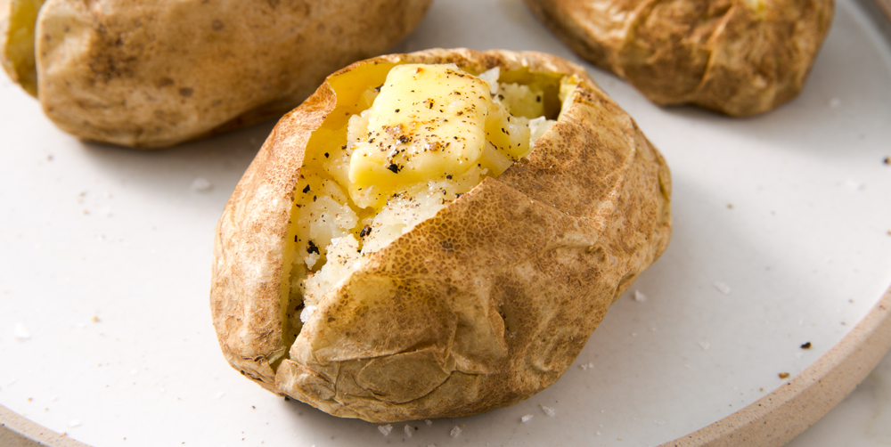

Fake Baked Potatoes

Description
Who doesn't love a nice, fluffy baked potato smothered in delicious toppings? But in this busy world, baked potatoes are a time consumption that many can't afford. I know, you can put them on to bake without watching, but what if you are in a hurry?
I didn't invent this, but I did name them. One day while I was getting ready to leave for work, I wanted to add a little something to meal that my wife had packed for me. I thought about takig a baked potatoe, but I didn't have an hour or more to devote to baking one. That's when I decided, why not try microwaving one?
I had done mircowaved baked potatoes when I was a kid, but it had been a while. Operating off my memory, I decided to give it a go. Boy was I pleased with the results! Hence the fake baked potatoes are a great in-a-hurry add on to any meal.
Ingredients
- Potatoes
- I used smaller russet potatoes, but you can use whatever potato you desire.
- Any toppings you like
- Butter, sour cream, sheese, salt, pepper, chives, etc. Really just whatever you like.
Steps
- Thoroughly scrub the potatoes under running water. Make sure they are very clean. Getting some dirt or sand in your mouth is a good way to ruin a good bite.
- Once the potatoes are clean, dry them off.
- Now grab a kitchen towel or oven mitt to hold a potato. With your other hand use a knife or fork to poke several holes in the potato. Just make sure not to stab your hand.
- Using a microwave safe plate, arrange them in a single layer with room between them. Place them in the microwave for 5 minutes on high.
- Once the timer goes off, check the potatoes with a fork or knife. If it goes in easily they are done. Otherwise you can keep microwaving in increments of 2 minutes and checking the potaotes in between.
- Once cooked, top them with your deisred topping and enjoy. Since I was taking mine as my supper to work, I just threw on some butter and warmed them up that evening at work. They were delicious and fluffy!
- Any leftovers can be stored in a Ziploc bag in the fridge for up to a week.